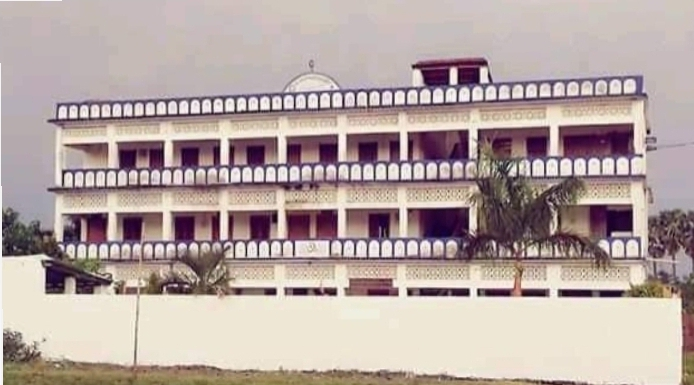
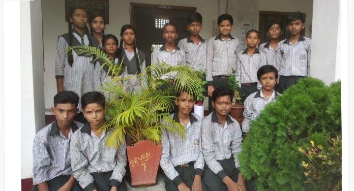
 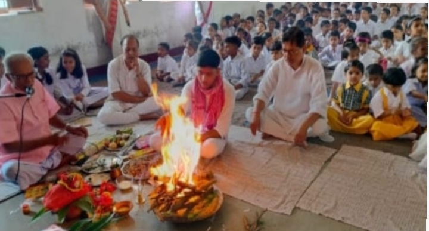
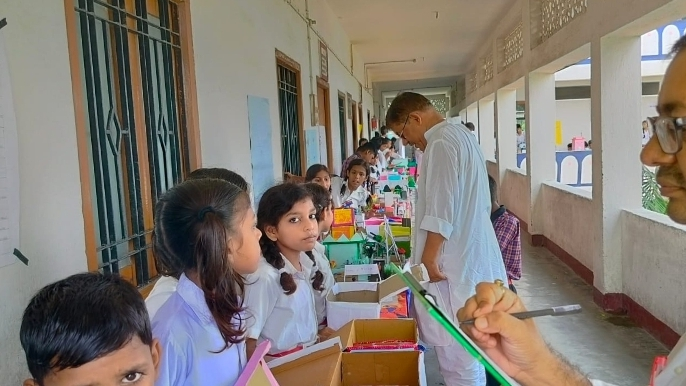
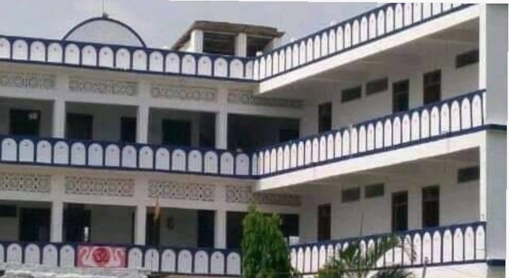
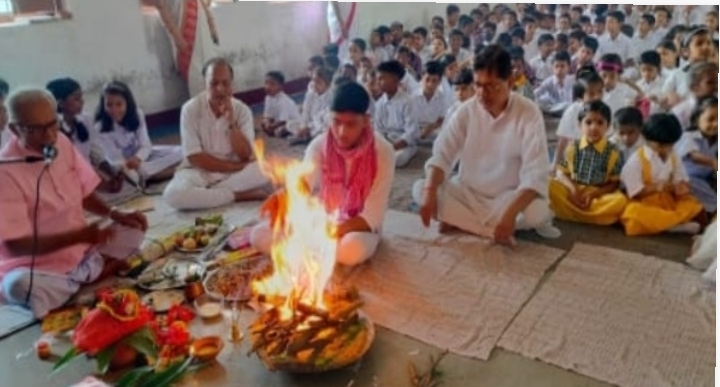
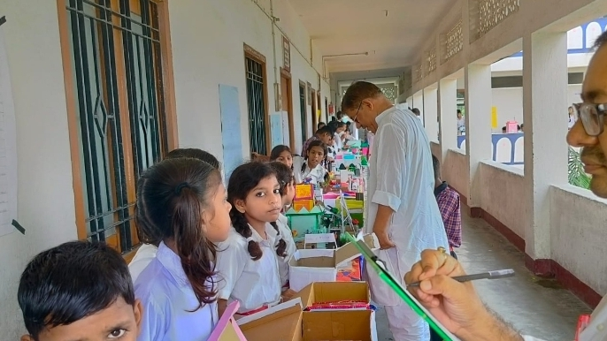
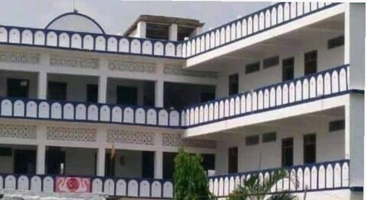
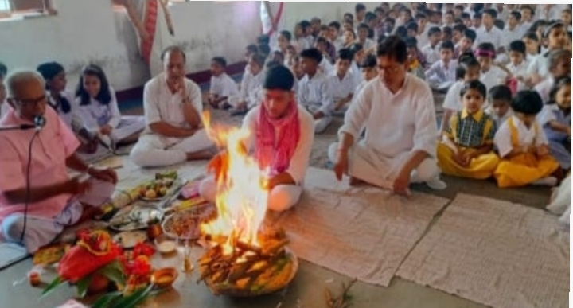
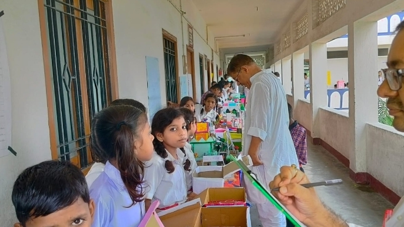
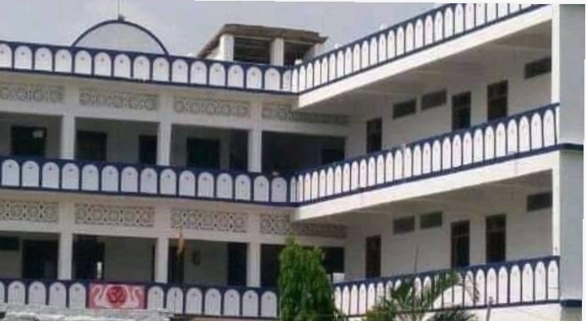
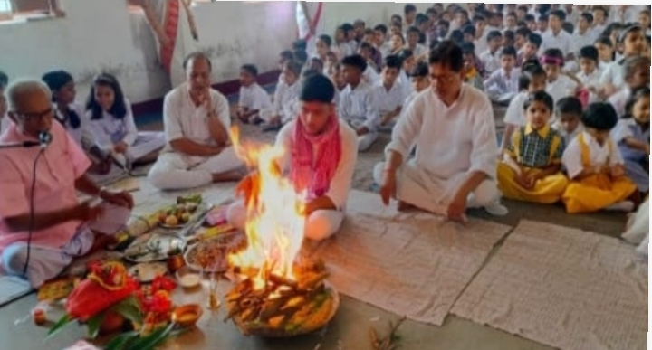
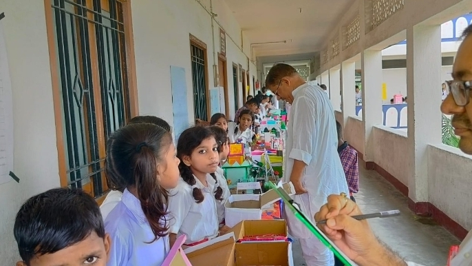
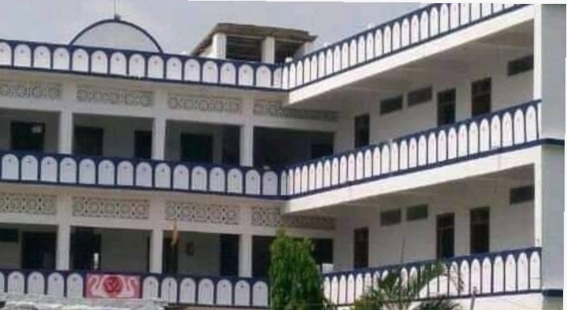
Apart from academic excellence, school believe in nurturing talent and providing opportunities for students to explore their interests. Our school hosts a range of extracurricular activities including sports, arts, and cultural events.
As a student of Sant Chetan Hari Sarswati Vidya Mandir, I can vouch for the nurturing environment and quality education it provides. The teachers go above and beyond to ensure our success, and the facilities make learning a joy.